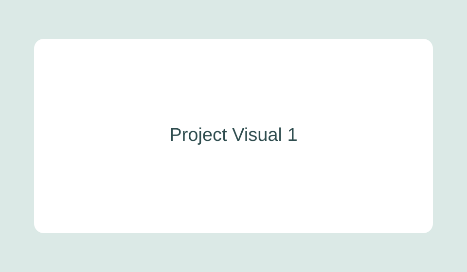
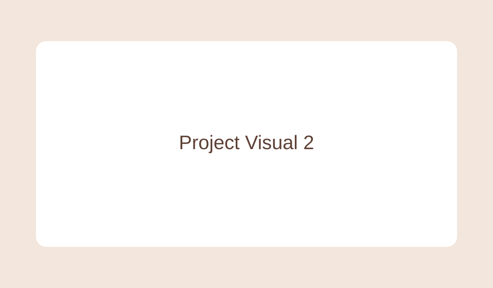
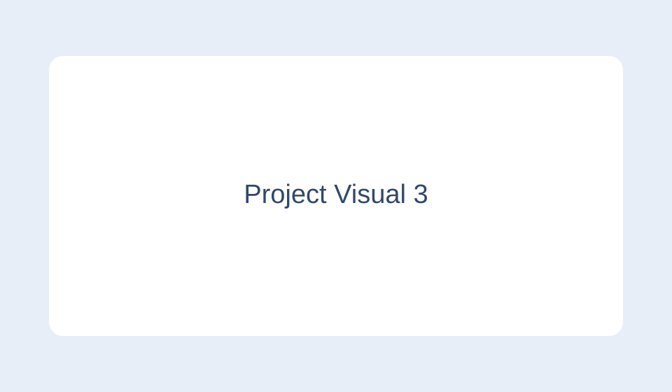
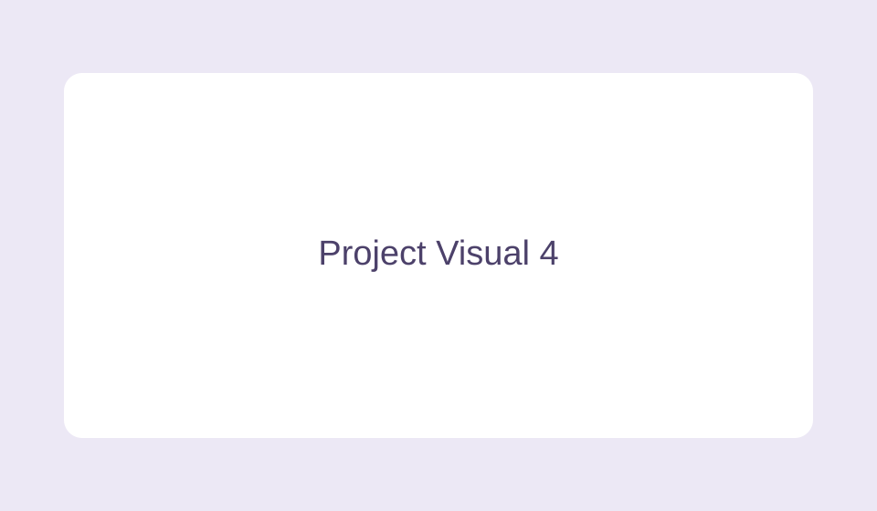

Click any project tile to open details on the same page.
Project Semester 2 SKIL2
Context: ECTS subject: Skills Integration 2. Built a secure web-based solution to apply cloud and cyber security concepts to a realistic case.
Realisations: Implemented the full front-end workflow, produced technical documentation in PDF format, and integrated validation and structured navigation for better user experience.

Embed area for demo video, live URL, or PDF report.
Learnings: Hard skills: HTML, CSS Grid, JavaScript DOM logic, secure form handling. Soft skills: planning, communication, iterative problem solving.
My role / What I did: I designed the interface, implemented interactivity, prepared documentation, and coordinated delivery quality in the team workflow.
Project Semester 1 SKIL2
Context: ECTS subject: Skills Integration 2. Created a portfolio-oriented project to showcase technical basics and structured presentation.
Realisations: Developed multi-page structure, reusable components, and responsive layout behavior across desktop and mobile screens.

Embed area for HTML preview, PDF file, or media proof.
Learnings: Hard skills: semantic HTML, responsive CSS, JavaScript event handling. Soft skills: ownership, feedback adaptation, and deadline management.
My role / What I did: I implemented the navigation system, designed the visual structure, and delivered the final integration and testing.
Additional Project 1
Context: Built as an extra initiative to strengthen applied development practice.
Realisations: Created a complete project flow with reusable UI components and a clear documentation package.

Embed area for project URL or showcase media.
Learnings: Hard skills: layout systems, debugging, code organization. Soft skills: initiative, communication, and structure.
My role / What I did: I owned front-end implementation and coordinated proof materials for presentation.
Additional Project 2
Context: Follow-up build to reinforce technical consistency and design quality.
Realisations: Delivered a responsive interface, clearer content hierarchy, and improved interaction behavior.

Embed area for PDF evidence, video, or hosted demo.
Learnings: Hard skills: accessibility basics, responsive tuning, content structure. Soft skills: reflection, reliability, and collaboration.
My role / What I did: I led the UI implementation and final quality checks before delivery.